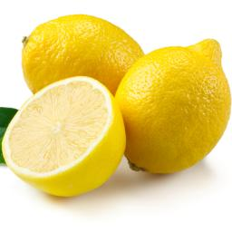

Squeezing the Juice from a Lemon/Lime
Submitted by Iqrah Tauhid
Squeezing the juice from a lemon or a lime can be quite the difficult
task, resulting in a sore hand
and very little juice.
Method
- Take a lemon or lime and put it on a flat surface.
- Using the palm of your hand, push down on the fruit lightly and roll it back and forth
- Keep rolling and pushing down until the firm fruit becomes mushy.
- Cut the lemon or lime in half and squeeze the juice out easily!